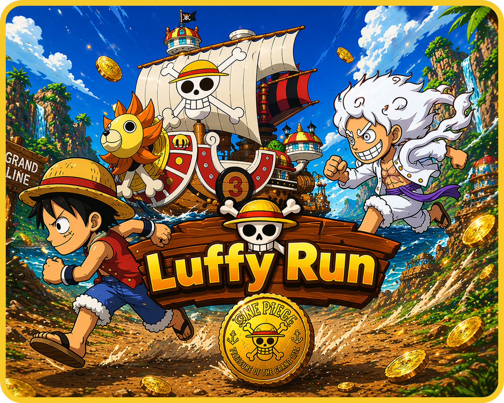

Luffy Run é um jogo de ação e plataforma em ritmo acelerado onde você controla Monkey D. Luffy em uma corrida frenética. O objetivo principal é simples, mas desafiador: correr o mais longe possível, acumular uma montanha de moedas de ouro (Berries) e, acima de tudo, sobreviver!
